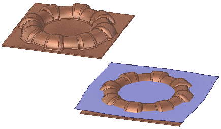

Creating blank features
Blank features are an essential part in the production of things such as deep drawn parts and stamped parts. These blank features are an approximate representation of the part model in a flattened state, indicating an approximate amount of material needed to create the end part.
Some advantages of creating blanks include:
Accuracy and dimensional control that can be repeated through a production run.
Excellent part flatness in the blank.
More economical when producing large number of parts.
You can use the Blank Body command to create a flattened body of an ordered or synchronous part or sheet metal model in the flatten environment.
You can use the Blank Surface command to create flat surface of an ordered or synchronous part or sheet metal model.

For input, both commands require a set of connected faces, a draw direction, a thickness, and formability properties. Blank features also require a material definition to determine the material deformation for the blank. If the document does not already have a material assigned, you are required to assign it when creating the blank.
The thickness is inferred for sheet metal parts.
The Blank body command orients the resulting blank in XY plane with the longest side of the blank along X axis while, with the Blank Surface command the blank is placed in a plane normal to the draw direction.
Learn how to create a blank body by watching the following video.